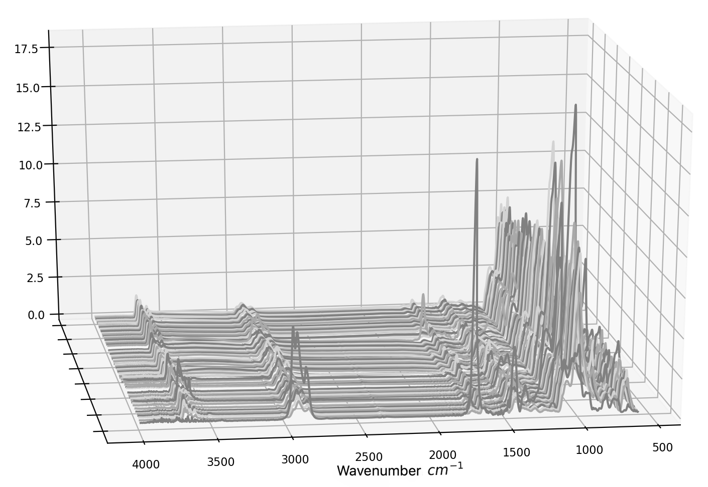

Clément Hardy
About
I obtained my PhD in mathematics in 2023. My supervisors were Cristina Butucea (CREST), Jean-François Delmas (CERMICS) and Anne Dutfoy (EDF). My thesis was the result of a collaboration between CERMICS (Ecole des Ponts), CREST (ENSAE) and EDF R&D. At EDF, I was part of the department of probabilistic studies for nuclear safety and systems reliability. My thesis manuscript is available here.
Research interests
High dimensional statistical models
Inverse problems
Off-the-grid numerical methods
Papers
Off-the-grid prediction and testing for mixtures of translated features; with C. Butucea, J.-F. Delmas and A. Dutfoy | [PDF].
Simultaneous off-the-grid learning of mixtures issued from a continuous dictionary
; with C. Butucea, J.-F. Delmas and A. Dutfoy | [PDF].
Off-the-grid learning of sparse mixtures from a continuous dictionary; with C. Butucea, J.-F. Delmas and A. Dutfoy | [PDF].
Conference papers
Modeling infra-red spectra: an algorithm for an automatic and simultaneous analysis. In Proceedings of the 31st European Safety and Reliability Conference; doi: 10.3850/978-981-18-2016-8_732-cd; with C. Butucea, J.-F. Delmas and A. Dutfoy | [PDF] .
Talks
Workshop on random matrix theory and high dimensional statistics for complex system | September 2023, Luxembourg| [diapos].
Soutenance de thèse | février 2023, Champs-sur-Marne| [diapos].
Research School on Uncertainty in Scientific Computing |october, 2022 Corse|.
International conference on computational and methodological statistics (CMStatistics) |December, 2021 London|.
Colloque jeunes probabilistes et statisticiens | octobre 2021, Oléron | [diapos].
31st European Safety and Reliability Conference | 19-23 September 2021, Angers | [slides].
